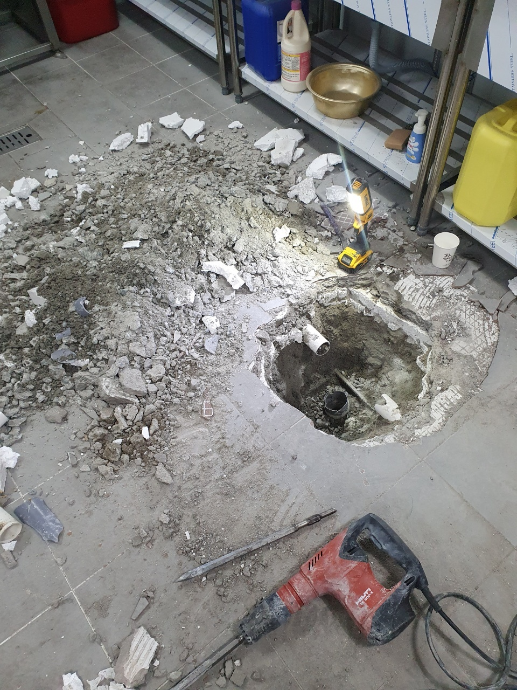
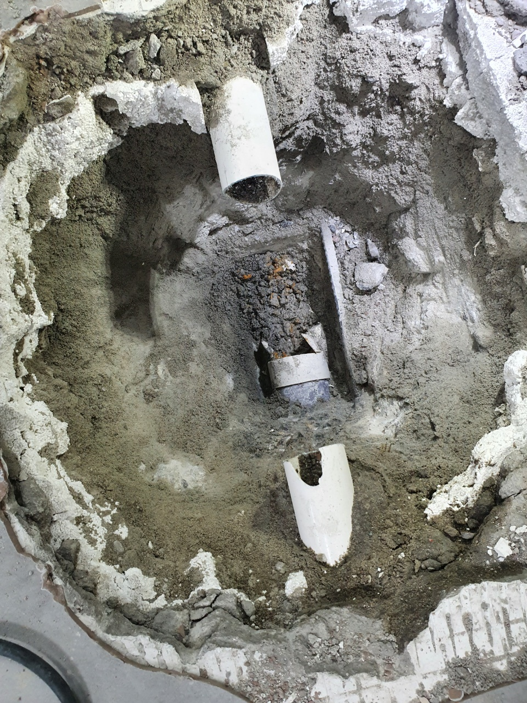
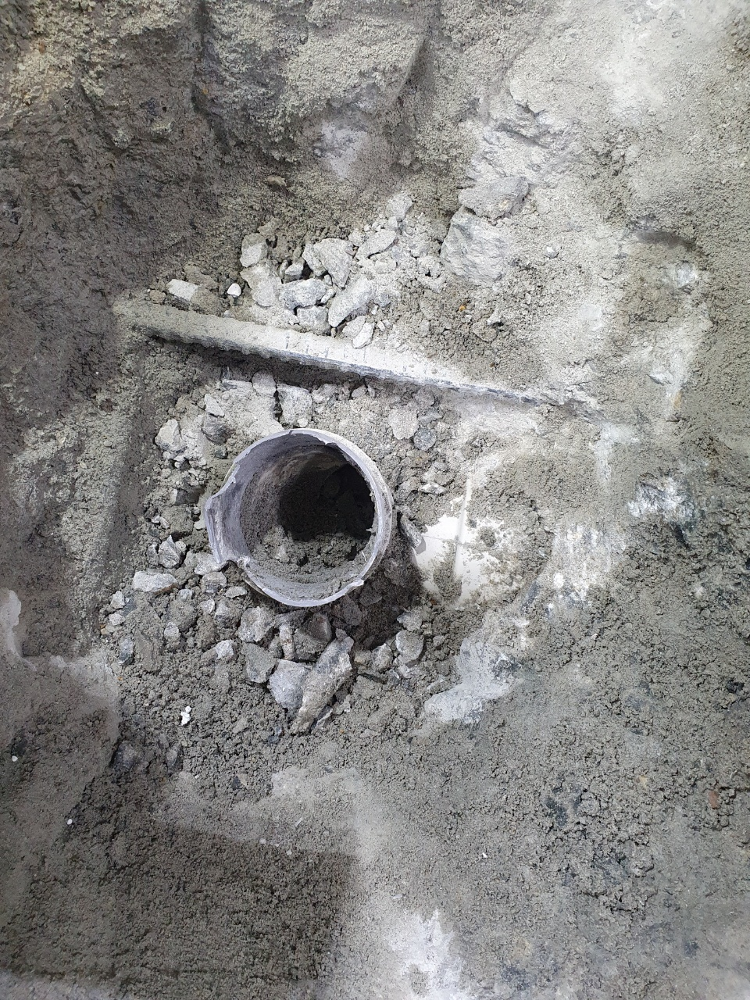
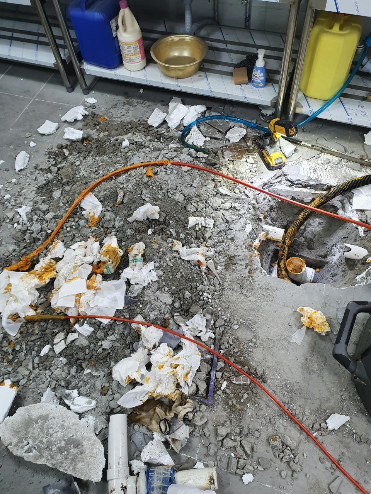

🏠 처인구 남사읍 이동읍 하수구막힘뚫음 전문업체 통해서
용인 처인구 하수구막힘 전문 시공 후기

📋 작업 개요
- 위치: 용인 처인구, 처인구, 용인
- 서비스 유형: 하수구막힘, 배관막힘, 역류해결, 뚫는업체, 고압세척
- 작업 일시: 2023. 3. 27. 23:22
- 업체명: 하수구수사대 (010-5615-2118)
🔍 문제 상황
안녕하세요 하수구수사대입니다.
추운 겨울이 되면 아무래도 배관 동파나 여러 가지 막힘 문제로 인해서 의뢰를 해주시는 분들이 늘어나게 되는 것 같습니다. 아무래도 배관 같은 경우에는 계절적인 영향이 있기도 하기 때문에 지금 같은 겨울철에는 배관이 더 막히지 않도록 주의를 하는 것이 필요한데요.
하지만 배관 같은 경우는 우리 눈에 보이지 않는 설비이기 때문에 대부분의 분들이 평소에 잘 신경을 쓰지 않게 되는 것이라고 할 수 있습니다. 이번에 소개해 드릴 현장 같은 경우는 처인구 남사읍 이동읍 하수구막힘뚫음 전문업체로 한 공장에서 하수구 막힘이 발생을 하게 되면서 연락을 주신 곳이었습니다.
하수구 문제로 인해서 여러 가지로 불편함을 겪고 있는 상황이었기 때문에 빠르게 달려가 보았는데요. 처인구 남사읍 이동읍 하수구막힘뚫음 전문업체 해결 현장을 통해서 배관 막힘을 어떻게 해결을 하게 되는지를 알려드리도록 하겠습니다.

🔎 원인 분석
💡 전문가 진단: 이번에 도착한 현장은
이번에 도착한 현장은
도심과도 어느 정도 떨어져 있는 곳이었는데요. 얼마 전부터 하수구를 통해서 물을 내려보았는데도 불구하고 잘 내려가지 않게 되다 보니 갑자기 역류가 발생을 하는 상황이 발생을 하게 된 것입니다. 공장이다 보니 당장에 가동을 하는 데에도 불편한 상황이 벌어지고 있는 상황이었는데요.
물을 사용할 수 없는 상황이었기 때문에 불편함이 많을 수밖에 없었습니다. 거기에 역류로 인해서 악취까지 동반을 하고 있는 상황이었는데요 우선 빠르게 처리를 하기 위해서 의뢰를 받은 고객님 댁에 빠르게 방문을 해서 작업을 하였습니다.
이러한 하수구 막힘이 발생했을 때에는 간혹 빨리 해결을 하려고 여러 가지 방법을 시도하시는 분들이 종종 있는데요. 실제로 시도를 해보신 분들의 경우에는 맘처럼 쉽게 되지 않는다는 것을 확인하실 수 있을 것입니다.

🔧 작업 과정
그렇기 때문에 이러한 배관 막힘을 해결을 하기 위해서는 반드시 전문업체의 도움을 받아서 할 필요가 있다고 할 수 있습니다. 보통 배수구가 막히게 되는 경우에는 배관의 상태가 나쁘거나 노후화로 인한 것도 원인이 될 수 있는데요.
그러므로 평소에도 이러한 공장이나 대형건물 같은 경우에는 주기적으로 정기점검을 통해서 쾌적하게 관리를 하는 것이 중요하다고 할 수 있습니다. 하수구를 통해서 물이 잘 내려가지 않게 되는 상황에서는 배수관의 상태를 먼저 의심하고 점검을 해보시는 것이 필요하다고 할 수 있습니다.
이물질 덩어리로 인해서 배관이 막히게 된 경우에는
제거를 하는 것이 가장 좋은 방법이기 때문에 우선적으로 전문가와 상의를 해보는 것이 필요하다고 할 수 있습니다. 처인구 남사읍 이동읍 하수구막힘뚫음 전문업체 현장의 경우에도 배관 내시경을 통해서 내부를 살펴보니 이물질 덩어리로 인해서 막혀있는 것을 확인하였습니다.
저희는 다양한 현장 경험과 노하우가 있는 만큼
배관이 막힌 상황과 현장에 따라서 적합한 진행을 통해서 해결을 해드리고 있습니다. 내시경을 통해서 배관 내부의 이물질들을 제거하기 위한 작업을 실시하기로 하였는데요. 배관 내부를 확인하면서 굳어있는 이물질들을 모두 제거를 하는 작업을 하였습니다.
배관세척도 함께 진행을 하면서 역류로 인한 악취까지도 모두 해결을 하도록 하였는데요. 배관 내에 있는 이물질들이 모두 제거가 되게 되면서 공장에 있는 배수관들의 물이 다시금 흐르게 되는 것을 확인하였습니다.


✅ 작업 완료
이렇게 전문 업체를 통해서 배관 문제를 해결하게 되면
원인 해결을 하기 때문에 제대로 된 문제를 해결할 수 있게 되는 것입니다.




⚠️ 하수구 배관 막힘 예방 및 관리 가이드
- ✅ 머리카락, 비닐, 물티슈 등 물에 분해되지 않는 이물질은 하수구 유입을 절대 금지해 주세요.
- ✅ 하수구 거름망을 씌우고 모여진 이물질은 주기적으로 쓰레기통에 바로 비워주셔야 합니다.
- ✅ 배관 노후가 심할 경우 이물질이 더 쉽게 걸리므로 주기적인 배관 세척(고압세척 등)을 권장합니다.
- ✅ 작업 후 1년 이내 재발 시 하수구수사대에서 무상 A/S 보증 서비스를 제공합니다.
💡 핵심 정리
- 확실한 장비 작업(내시경 점검 및 샤프트 스케일링)으로 원인을 뿌리 뽑습니다.
- 작업 후 1년 이내에 동일한 부위 재발 시 100% 무상 A/S 서비스를 보장합니다.
- 서울 · 경기 · 인천 전 지역에 24시간 언제든 긴급 출동할 수 있도록 항시 대기 중입니다.
❓ 자주 묻는 질문 (FAQ)
🚨 용인 처인구 하수구막힘 문제로 고민이신가요?
정확한 원인 진단과 확실한 시공으로 재발 없는 해결을 약속드립니다.
24시간 긴급 출동 | 서울 · 경기 · 인천 전지역 | 1년 내 재발 시 무상 A/S